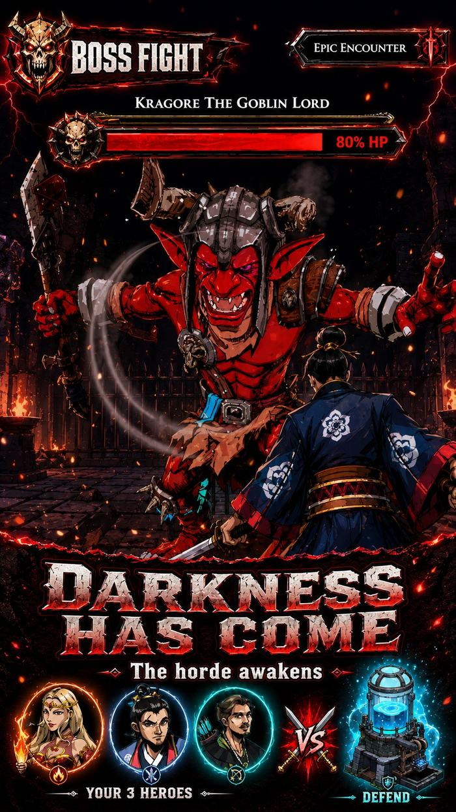
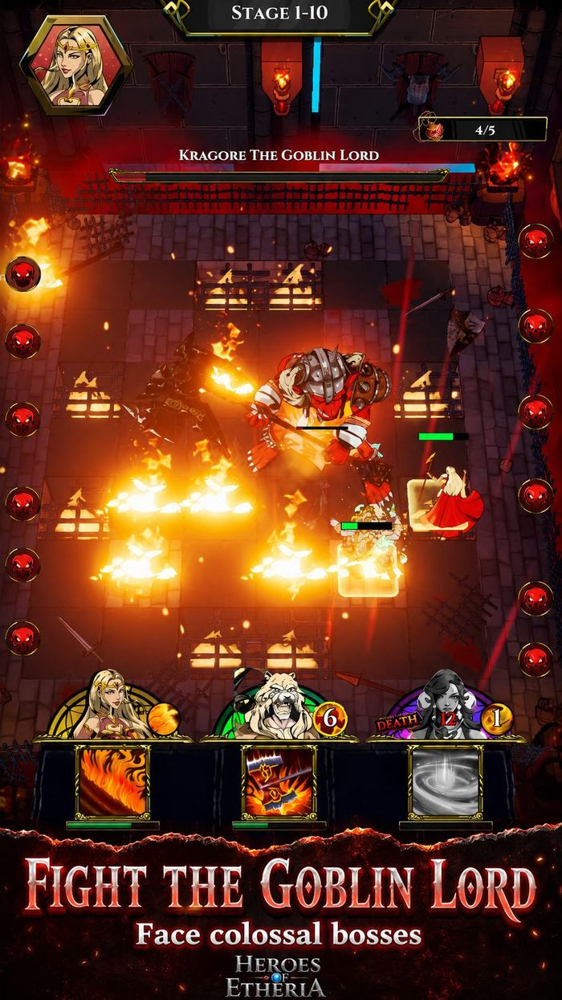
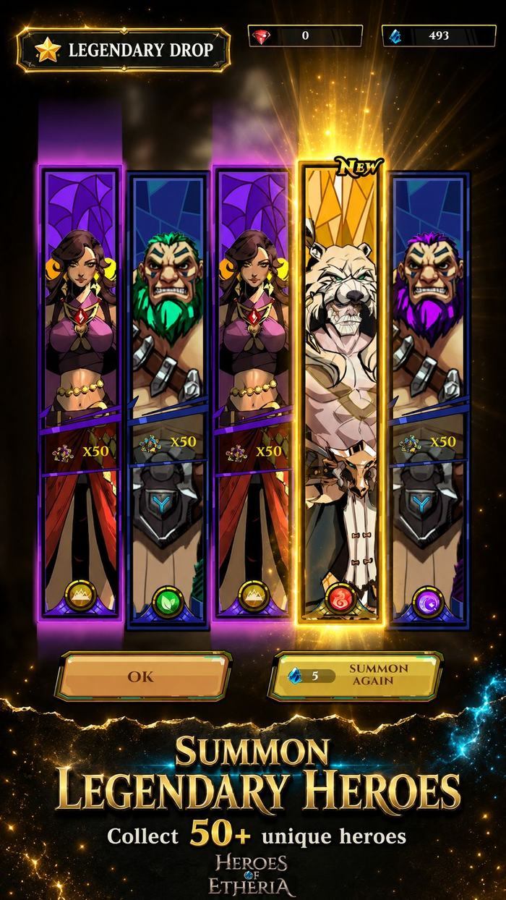
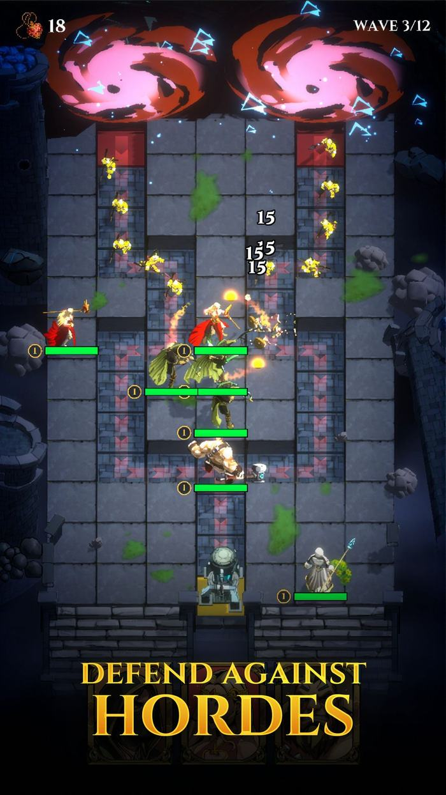
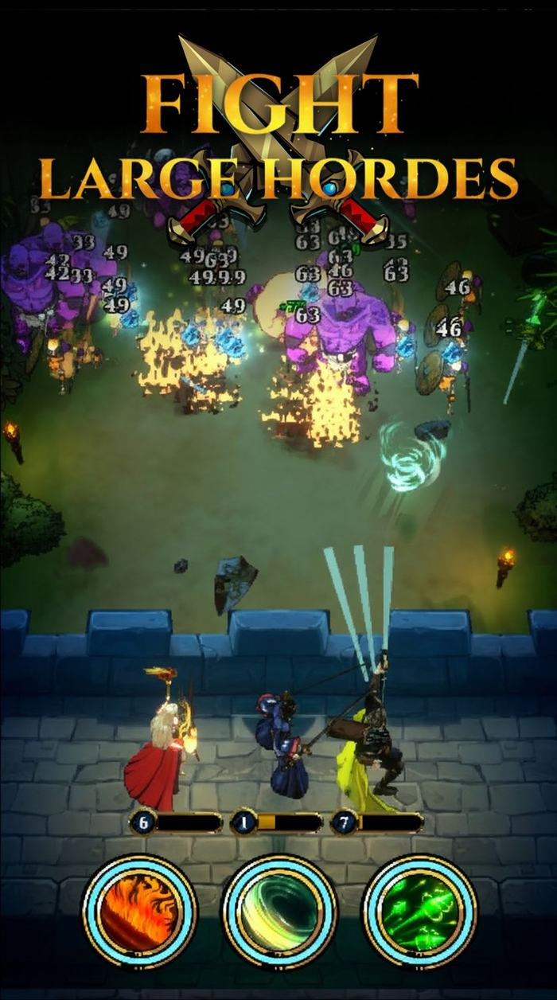
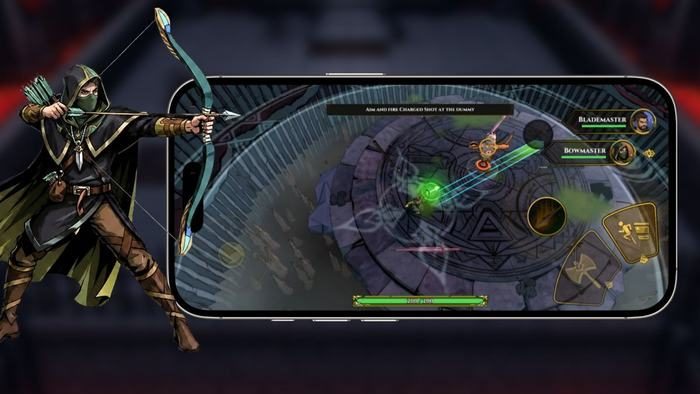

The situation
A small studio testing several game concepts at once has one honest constraint: the number of titles you can put in front of players per quarter is your learning rate. Ship one game and you learn one thing. The market decides faster than any amount of internal deliberation.
The naive way to ship four games is to build four games. With a team our size that means four shallow codebases, four sets of the same bugs, and four separate analytics integrations that report subtly different numbers.
Heroes of Etheria shipped in July 2026 and gave us the raw material for a different approach. It already contained the pieces every one of our concepts needed — heroes with abilities, waves of enemies, a run-based progression loop, remote-configurable balance — because it ran three quite different modes off one dataset: saga campaign, endless survival, and farming runs.
The bet
Rather than fork Heroes of Etheria per concept, we extracted the parts that were genuinely common into a shared core, and made each title a thin composition on top. The wager: pay an up-front extraction cost, then get each subsequent title for a fraction of the work.
The decision ruleA system goes in the core only when at least two shipping titles need it and their needs already agree. Anticipated commonality is not commonality — it's how you end up with a framework that fits nothing.
That rule mattered more than any technical choice. The failure mode of shared frameworks isn't that the code is bad, it's that someone generalises a system before there's evidence about what varies. So the core started deliberately small and grew only on the second real demand.
What went in the core
Four titles with different loops turn out to share almost all of their infrastructure and very little of their gameplay:
- Hero and ability model. Stats, status effects, cooldowns, targeting. All four titles have heroes with abilities; only the firing rules differ.
- Enemy and wave definitions. A wave director reading authored data. A tower defence wave, a survivor horde and a boss phase are the same structure with different parameters.
- Run-based progression. Start a run, accumulate power, end, bank meta-currency. Identical in all four.
- Economy and IAP. Currencies, shop, receipt validation, reward granting — pure infrastructure, zero genre specificity.
- Analytics and remote config. One instrumentation layer, so a funnel means the same thing in every title and they can be compared honestly.
- Boot, save, settings, localisation. The unglamorous 20% of every project that we stopped rewriting.
What stayed out was the part that makes each game itself: the control scheme, board or arena layout, the moment-to-moment loop, the specific mechanic. Merge in Ether Defenders. Boons in Protect the Wall NOW. Rune socketing in Ether Survivors. Hero swapping in Ether Trinity. Those are per-title code, and keeping them out of the core is exactly why the core survived.
Composition over inheritance
The obvious structure is a base GameMode class each title inherits.
We'd already been bitten by that shape: it collects flags, and every new title adds
a branch to a method three titles don't care about.
Instead, a title assembles the services it needs and supplies its own rules. No inheritance chain, no base class knowing about its subclasses, and each title's entry point reads as an inventory of what that game actually is.
Shape of a title's entry point
// Each title composes the core rather than extending it.
public sealed class EtherDefendersGame : IGameLoop
{
private readonly IWaveDirector _waves; // core
private readonly IHeroRoster _heroes; // core
private readonly IEconomy _economy; // core
private readonly MergeBoardRules _rules; // this title only
public void Tick(float dt)
{
_waves.Tick(dt);
_rules.ResolveMerges(_heroes.OnBoard);
}
}The practical test of whether this worked: could a title change its core behaviour without touching another title? With composition, yes — a game swaps its own rules object. With a shared base class, that same change is a branch in code four games execute.
Shared live-ops
The under-appreciated dividend wasn't development speed, it was operations. One analytics schema across four titles means the day-one retention number in one game is directly comparable to another — so the portfolio itself becomes the experiment. Four concepts in market, measured identically, is a far sharper signal than four incomparable dashboards.
One remote config layer also meant balance changes shipped without store submissions, in every title, through the same mechanism. Four separate implementations of that would have been four separate sets of edge cases in the worst possible place to have them: live, in front of players.
What it cost
An honest account, because a case study that only reports wins isn't an engineering document:
- Coupling risk is real. A core change touches four shipping titles. That demands discipline the schedule doesn't always allow — and it means a subtle regression can quadruple in blast radius.
- Genre pull on the core. Each title arrived with one feature that nearly belonged in the core. Saying no repeatedly is exhausting, and I said yes at least once I shouldn't have.
- Four titles in eighteen days compresses QA. The framework removed engineering time, not testing time. Overlapping launch windows was the riskiest part of the whole exercise and the part I'd plan differently.
- Shared code makes divergence expensive later. If one title finds an audience and needs to go deep, it eventually wants out of the shared core. That exit cost is a debt the approach quietly takes on.
What I'd do again
- Extract from a shipped game, not from a design document. The core worked because it was distilled from something that already ran in production and had real players.
- Hold the two-titles rule. Every system I generalised on speculation was wrong about what would vary. Every system I extracted on the second real demand was right.
- Invest in the boring layer first. Save, boot, config, analytics. It's the least interesting code to write and it's what actually compounds across a slate.
- Stagger the launches. The framework earned the throughput; I spent it badly by clustering four submissions into three weeks.
Gallery
Heroes of Etheria — the title the shared core was extracted from.




Three of the four titles that shipped from it.


